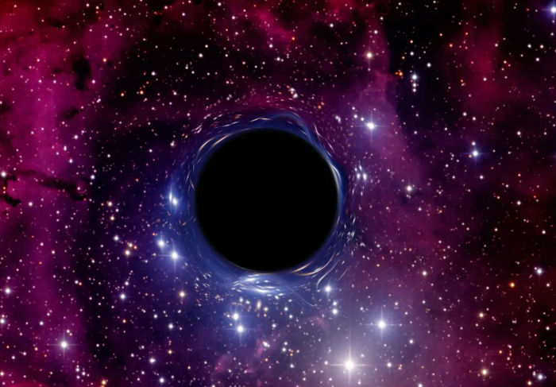

Domaine de physique
Relativité générale

Relativité générale
La relativité générale est la théorie géométrique de la gravitation. Elle généralise la relativité restreinte en décrivant les référentiels accélérés et en reliant la gravitation à la courbure de l'espace-temps.
Le principe d'équivalence
Dans une région suffisamment petite, les effets d'un champ gravitationnel et ceux d'une accélération peuvent être indiscernables. Ce principe d'équivalence est le point de départ d'une nouvelle interprétation : les objets en chute libre suivent les trajectoires les plus droites possibles dans un espace-temps courbé.
Matière, énergie et courbure
La matière et l'énergie indiquent à l'espace-temps comment se courber ; cette courbure indique aux objets comment se déplacer. Autour d'une masse, les trajectoires de la lumière elles-mêmes sont déviées. La théorie explique ainsi la précession de Mercure, le décalage gravitationnel des horloges et les lentilles gravitationnelles.
Trous noirs et ondes gravitationnelles
Lorsqu'une masse est suffisamment concentrée, elle peut former un trou noir, une région dont rien ne peut ressortir après avoir franchi l'horizon. Les variations violentes de la courbure, par exemple lors de la fusion de deux trous noirs, produisent des ondes gravitationnelles détectables sur Terre.
Une théorie à tester
La relativité générale est remarquablement vérifiée à grande échelle, mais elle n'est pas encore unifiée avec la mécanique quantique dans les situations extrêmes. Ses prédictions restent donc un terrain actif de mesures et de recherche.